mu-Toni Manual: Generative Arpeggiator Synth User Guide
mu-Toni: Generative Arpeggiator.
Prefer a file? Download the manual as a PDF. Back to mu-Toni · release notes · all guides.
1. Introduction
mu-Toni is a generative arpeggiator and mono synthesiser from Transwarp Development Project. It runs as a VST3 plug-in, a CLAP plug-in, and a standalone application.
You choose a scale and a chord, and mu-Toni plays that chord one note at a time, climbing and falling through as many octaves as you like. Each note is played by a two-oscillator wavetable synthesiser with its own amplitude, filter and pitch envelopes. Because every control of the arpeggiator can be moved by the modulators, the pattern can change shape, key and speed while it plays.
mu-Toni stacks up to eight layers. Each layer is its own arpeggiator and synthesiser, with its own sound, so several layers together make layered, detuned or interlocking arpeggios over one shared tempo. A new mu-Toni starts with one layer. Everything else is the family you may know from mu-Clid and mu-Tant: the same mixer, effects, modulators, presets and transport bar.
mu-Toni is free to download and use, with every feature, and a one-off £20 licence removes the licence reminder (see Supporting mu-Toni).
Who Is This For?
mu-Toni is for producers and performers who want movement without programming notes: pulsing basslines, bright generative leads, slow chord arpeggios and 303-style slides. It works in a DAW session, fully automatable and synchronised to the host transport, or as a standalone instrument for live performance and sketching.
Where the Name Comes From
The name comes from a customer of a music shop where I used to work in Bristol, his name was Tony. No matter how many times he was told that an arpeggiator was called an arpeggiator, an Italian word, Tony always called them 'appagators'. The Settings page carries his often asked question: Has it got an appagator, is it a powerful tool?
Bless him, he was a bit special. I wonder what became of him.
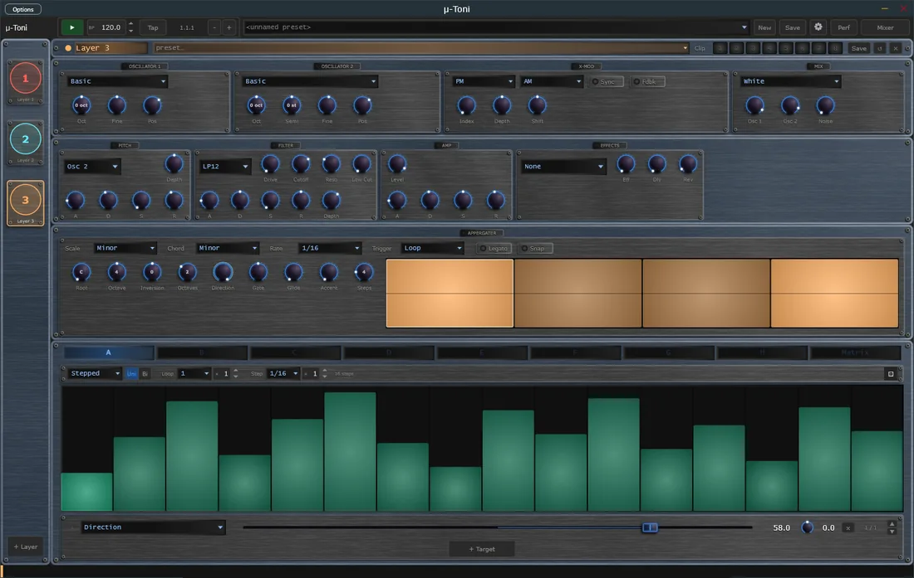
2. How the Arpeggiator Thinks
A traditional arpeggiator plays back a list of notes you gave it. mu-Toni stores no list. Every time a step comes round, it works out the note from the controls as they are at that moment: the scale, the chord, the root note, the number of octaves and the direction. That is why every one of these controls can be modulated, and why changing one reshapes the arpeggio on the very next step.
In plain steps:
- The chord you pick (for example Minor 7th) supplies the notes to play: the root and the other chord tones above it.
- Inversion re-voices the chord. A positive Inversion lifts the lowest notes up an octave; a negative one drops the highest notes down an octave.
- Octaves stacks that set of notes over one to four octaves, starting from the root note and root octave.
- Direction decides how the notes are visited, from always climbing, through up-and-down, to always falling.
- Rate sets how fast the steps come, locked to the tempo.
mu-Toni plays one note at a time (it is monophonic). The chord only chooses which notes are in the pool; it is never sounded as a stacked chord. To hear several notes at once, add layers.
3. Installation
Plug-in Files
mu-Toni ships in three formats:
- VST3 — copy mu-Toni.vst3 to %ProgramFiles%\Common Files\VST3\
- CLAP — copy mu-Toni.clap to %ProgramFiles%\Common Files\CLAP\
- Standalone — run mu-Toni.exe from any location
Content Folder
On first launch mu-Toni creates a content folder at %USERPROFILE%\Documents\TDP\muToni\ with sub-folders for presets (full preset files, .muToni) and arps (single-layer preset files, .muArp).
Supporting mu-Toni
mu-Toni is free to download and use, and every feature works for everyone. A copy without a licence shows a polite reminder each time it loads. A one-off licence for £20 removes the reminder: after you pay, a licence key is sent by email from Lemon Squeezy, our payment provider, and entering the key removes the reminder for good. The key changes nothing else; mu-Toni works the same with or without it.
A copy without a key shows a polite 'Support mu-Toni' window every time you load mu-Toni: each new instance in your DAW, and each time the standalone app starts. It has three buttons:
- Maybe later — closes the window for that instance and carries on. It appears again the next time you load mu-Toni.
- Enter licence key — opens the 'Enter licence key - mu-Toni' panel, where you type in your key.
- Get a licence — opens the checkout page in your web browser. A licence is a one-off payment of £20, and a key is emailed to you.
The reminder cannot be switched off without a licence. To bring the window back at any time, click the Support link at the right of the Status Bar, or the Support button in the About panel.
To enter your key, click Enter licence key in the Support window, or click the mu-Toni logo to open the About panel and click Enter a key. In the 'Enter licence key - mu-Toni' panel (it reads 'Enter your licence key to remove the support reminder. Everything works either way.'), paste your key into the Licence key box and click Activate (or press Return). If you do not have a key yet, click Get a licence to open the checkout page in your web browser. mu-Toni needs an internet connection the first time, to register the key. One key can be used on up to 5 machines. When the key is accepted the panel shows a confirmation and closes, the About panel thanks you for your support, and the Support window and Support link no longer appear.
A licensed copy shows 'Thank you for supporting mu-Toni.' in the About panel.
Once activated, mu-Toni checks your key with the server now and then when it starts. If you are offline at that moment it carries on working as normal for up to 30 days.
If activation fails, the panel tells you why. Check that you pasted the whole key and that you are online, then try again. A key that has already been used on 5 machines needs one of them released first; use Contact Support at the bottom of the Settings page. If the computer has no internet connection at all, the licence key panel shows a machine code at the bottom. Send that code to Contact Support and you can be sent an offline licence file for that computer, to place in the mu-Toni content folder.
4. Interface Overview
The mu-Toni window is divided into four regions:
- Transport Bar (top) — playback, BPM, presets, mixer, and settings
- Layer Sidebar (left) — one item per layer, plus an Add button
- Layer Editor (centre) — the oscillators, voice sections, Appergater and modulators for the selected layer
- Mixer overlay — opened from the transport bar, replacing the editor
- Status Bar (bottom) — the name, value and unit (ms, s, Hz, kHz, %, dB, semitones, cents, octaves or a note name) of the control you last touched, with a small Support link at the right-hand end. When a newer version is available, an Update available link appears beside Support (see Update Check in the Settings chapter)
The window has two sizes, Medium and Large, chosen in Settings (Display, Size). Everything scales with it. In the standalone application an Options button at the top left of the window opens the audio and MIDI device settings.
5. Transport Bar
Controls from left to right:
- mu-Toni logo — click to open the About panel, where you can also support mu-Toni or enter a key
- Play / Stop — in DAW mode follows the host transport and BPM, even while the plug-in is bypassed; in standalone starts and stops playback. Locked while an external MIDI clock controls play (see MIDI Clock Sync). While stopped, the arpeggiator is silent; notes that are already sounding fade out through their release.
- BPM display — read-only in DAW mode; editable in standalone. Tempo runs from 20.0 to 300.0 BPM with one decimal (for example 127.5; whole tempos show .0). Click the up or down arrow to step one whole BPM and keep the fraction (127.5 becomes 128.5); Shift+click steps a tenth. Double-click to type a value such as 127.5 or 127,5; a value outside the range is clamped to it. The same field appears in Settings. Locked, and showing the clock's tempo to a tenth, while an external MIDI clock sets the tempo. The clock drives the arpeggiator and the modulators.
- Clock lamp — standalone only. Replaces the Tap button and sits between the BPM display and the Position readout, and appears only while MIDI clock sync is on with Messages set to Clock only or Clock + Transport (it is hidden with Transport only, and when Source is Internal). Dim amber means waiting for clock, green means locked to the clock, red means the clock was lost and the transport has stopped. The lamp stays steady; it never blinks. Hover over it to read its state in the status bar. See MIDI Clock Sync.
- Tap button — standalone only. Takes the place of the Clock lamp whenever the lamp is not shown (the internal clock, or MIDI clock sync set to Transport only), so you see Tap or the lamp, never both. Tap it in time with the beat to set the tempo: it needs two taps, averages your last four intervals, and starts a new count if you pause for more than two seconds. The result is rounded to a tenth of a BPM, kept within 20 to 300, and written into the BPM field.
- Nudge buttons (− and +) — standalone only. Two small buttons just right of the Position readout. Hold − to run the groove 4 % slower, or + to run it 4 % faster, to line up with another player by ear. Let go and the set tempo returns exactly; the BPM field never changes. Under an external MIDI clock, holding a button shifts the groove against the clock by that amount, and the shift stays until the next Start.
- Position — bar, beat, and sixteenth readout (e.g. 3.2.1). In DAW mode it follows the host's position, even while the plug-in is bypassed, and counts in the host's time signature: in 3/4 a bar has three beats, in 7/8 it has seven eighth-note beats, and the last number is the sixteenth within the beat. Bar 1 starts where the host's bar 1 starts, so a pickup bar is counted correctly. The standalone counts in the time signature chosen in Settings (4/4 by default). The time signature only changes the readout; mu-Toni's arpeggiator steps and modulator loop lengths still treat a bar as four beats.
- Preset dropdown / New / Save — load and save full .muToni presets. New loads your default preset (tick Save as Default when saving) after asking whether to discard unsaved changes.
- Settings (gear) icon — opens the Settings overlay.
- Perf button — standalone only. Sits between the Settings icon and the Mixer button and turns on Performance mode (also Ctrl+P). See Performance Mode in the Presets chapter.
- Mixer button — opens the mixer overlay. The label changes to Sequencer while the mixer is open.
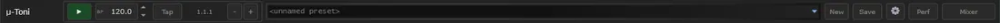
6. Layer Sidebar
The sidebar shows one item per layer, each with its number, its colour and its name. Click an item to select that layer for editing. The selected layer's colour is used for its header and panel borders.
- Add — the + Layer button at the bottom adds a layer (maximum eight; the button is disabled at eight). A mu-Toni starts with one layer. A new layer is audible straight away with its default settings, so you can hear it as soon as you add it.
- Delete — the Delete (×) button in the layer header removes the selected layer, after a confirmation. The last remaining layer cannot be deleted.
- Reorder — drag an item up or down. A layer keeps its settings and colour when it moves.
Layers are named Layer 1, Layer 2 and so on, and the names cannot be edited. Projects saved by earlier versions of mu-Toni, which always had four layers, open with four layers.
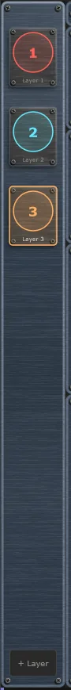
7. Layer Header
At the top of the layer editor:
- Layer name and colour dot.
- Arp preset dropdown — load a single layer from a .muArp file in the Arps folder.
- Clip strip — eight numbered pads that store and recall versions of this layer (see Clips in the Presets chapter).
- Save — saves this layer as a .muArp file.
- Reset (circular arrow) / Delete (×) — reset to defaults / remove the layer (both confirm first). Reset also clears the layer's clips, and its confirmation then says so.
8. Oscillators, X-Mod and Mix
The top row of the layer editor holds the sound source. The arpeggiator sets the pitch of every note; the controls here shape the tone.
Oscillator 1 and Oscillator 2
Each oscillator has a wavetable selector. mu-Toni uses the same wavetables as mu-Tant, with the Pos knob morphing through the table. Oscillator 1 has three knobs, Oscillator 2 has four:
- Oct (-3 to +3 octaves) — octave offset from the arpeggiator's note
- Semi (Oscillator 2 only, -12 to +12) — a semitone offset, to play a fixed interval against Oscillator 1
- Fine (plus or minus 100 cents) — detune. Oscillator 2 starts at +7 cents for a gentle thickening
- Pos (0 to 255) — wavetable frame position; morphs through the table
X-Mod
X-Mod lets Oscillator 2 modulate Oscillator 1, in two lanes that run together:
- Phase mode dropdown — FM (frequency modulation), PM (phase modulation, the default; stays in tune) or TZFM (through-zero FM). The Index knob (0 to 100) sets how much.
- Amplitude mode dropdown — AM (amplitude modulation, the default), RM (ring modulation) or SSB (single-sideband frequency shift). The Depth knob (-100 to +100, with off at the centre) sets how much; with SSB, the Shift knob (up to plus or minus 2 kHz) slides every partial by a fixed number of hertz.
- Sync — hard-syncs Oscillator 2 to Oscillator 1 for a formant-like edge.
- Fdbk — feedback: Oscillator 1 also modulates Oscillator 2, for grittier tones.
Mix
The Mix box sets the balance before the filter:
- Noise type dropdown — White or Pink.
- Osc 1 and Osc 2 — the level of each oscillator (-60 to +6 dB).
- Noise — the noise level (-60 to 0 dB; the default of -60 dB is off).
9. Pitch, Filter, Amp and Effects
The second row has four boxes. Each of the first three has an ADSR envelope. Envelope times run from 1 millisecond to 4 seconds. Every note the arpeggiator plays starts these envelopes, except a tied (legato) note, which carries on (see Gate, Legato and Glide). The knob labels are fixed words with no units; the Status Bar shows the value and its units as you hover or turn.
Pitch
The pitch envelope adds a short blip or slide to the start of each note.
- Target dropdown — which oscillators the envelope moves: Osc 1+2, or Osc 2 only (the default).
- Depth (-24 to +24 semitones, default 0). At 0 the envelope does nothing.
- A, D, S, R — attack, decay, sustain and release.
Filter
- Type dropdown — sixteen filters: LP 6 / 12 / 24, HP 6 / 12 / 24, BP 12 / 24, Notch, Notch 24, AP 12, Comb +, Comb -, Peak, Lo Shf and Hi Shf.
- Drive (0 to 100 percent) — valve saturation before the filter.
- Cutoff (20 Hz to 18 kHz, default 3 kHz; the middle of the knob's travel is 640 Hz, so the low settings get more room) and Reso (0 to 0.99, default 0.3).
- Low Cut (0 to 1000 Hz, off at 0) — a high-pass after the filter that clears sub-bass build-up.
- A, D, S, R and Depth — the filter envelope. Depth (-1 to +1, default 0.3) sets how far it sweeps the cutoff; negative values sweep it down.
Amp
- Level (-60 to +6 dB, default 0 dB) — the layer's output level.
- A, D, S, R — the amplitude envelope, which shapes the volume of every note. Defaults: attack 4 ms, decay 150 ms, sustain 50 percent, release 150 ms.
Effects
The Effects box holds the layer's insert effect and its three FX sends. Choose an algorithm from the dropdown (None, 3-Band EQ, Bitcrusher, Chorus, Clipper, Compressor, Flanger, Fold, Hard Clip, Karplus, Limiter, Overdrive, Phaser, Ring Mod, Soft Clip, Tape Sat, Vocoder or Vocoder St); four knobs appear and are labelled to match the algorithm. Tape Sat gives the soft squash of a tape machine: Drive pushes the signal in (the highs compress and soften first), Output sets the level, Head Bump adds up to 4 dB of low-end lift around 75 Hz, and Tone darkens the result. Chorus, Flanger and Phaser sound like the Effect send of the same name, with a Mix knob. The insert sits after the amplitude envelope, so effects with their own tail can ring on past the note. The Eff, Dly and Rev knobs are the layer's sends to the mixer's Effect, Delay and Reverb; they are the same sends as on the layer's channel strip. The Clipper shows a gain-reduction meter like the Compressor. Time, rate and cutoff knobs give more of their travel to the short and low settings, so fine adjustments there are easier; this includes the time and rate knobs of the Effect, Delay and Reverb.
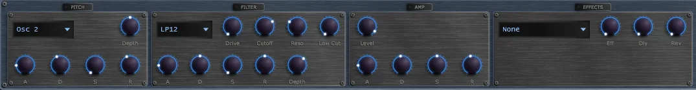
10. The Appergater
The Appergater is the arpeggiator. It fills the bottom of the layer editor, above the modulators.
Scale, Chord, Rate and Trigger
- Scale dropdown — the key the arpeggio belongs to. Twelve scales: Major, Minor (the default), Dorian, Phrygian, Lydian, Mixolydian, Locrian, Harmonic Minor, Pentatonic Major, Pentatonic Minor, Blues and Chromatic.
- Chord dropdown — the chord whose notes are arpeggiated. About thirty-five chords, from the everyday shapes at the top (Single note, Power, Major, Minor, then suspended, diminished and augmented triads, sixths and sevenths, ninths) down to elevenths, thirteenths and altered jazz chords. The default is Minor.
- Rate dropdown — the step length as a note value: 1/4, 1/8, 1/16 (the default) and 1/32, each also as a dotted value (for example 1/8.) and a triplet value (for example 1/8T). It follows the tempo.
- Trigger dropdown — Loop (the default) or MIDI (see Playing with a Keyboard).
- Legato and Snap toggles — see Gate, Legato and Glide, and Snap.
Root, Octave, Inversion and Octaves
- Root (0 to 11) — the root note, from C (0) up to B (11).
- Octave (0 to 8, default 4) — the octave the root sits in, which sets where the arpeggio starts.
- Inversion (-4 to +4, default 0) — re-voices the chord. +1 moves the lowest note up an octave, +2 the lowest two, and so on. -1 moves the highest note down an octave, which gives wider, more open voicings. The setting is limited to what the chord has notes for.
- Octaves (1 to 4, default 2) — how many octaves the chord tones are stacked over.
Direction
Direction (-100 to +100, default +100) decides how the arpeggio travels through its notes. At +100 it climbs and starts again from the bottom, the classic up arpeggio. At -100 it falls. At 0 it climbs and falls equally, the up-and-down arpeggio. Values in between lean one way: +50 climbs through every note and comes down more quickly, skipping some notes. The pattern is exactly the same on every pass; nothing is random.
Gate, Legato and Glide
- Gate (1 to 100 percent of the step, default 50) — how long each note is held before it is released. Short values are staccato; 100 percent joins the notes.
- Legato toggle — when on, a note with Gate at 100 percent is tied to the next one: the envelopes are not restarted across the join.
- Glide (0 to 500 milliseconds, default 0; short glides get more of the knob's travel) — how long the pitch takes to slide from one note to the next. You hear glide only on tied notes.
So the three work together:
- Legato on and Gate at 100 percent — tied notes that slide over the Glide time, like a 303 slide.
- Legato on and Gate below 100 percent — separate plucked notes with gaps; no glide.
- Legato off — every note is plucked; no glide, whatever Glide is set to.
To slide only on some steps, modulate Gate up to 100 percent on those steps with a stepped modulator.
Snap
With Snap on, every chord tone is moved to the nearest note of the chosen scale, so the arpeggio is always strictly in key. With Snap off (the default) the chord is played as named. In sparse scales, Snap can make two chord tones land on the same note.
Step Pattern and Accent
The row of cells at the right of the Appergater is the step pattern. Steps (1 to 16, default 4) sets how many cells it has. Each step is in one of three states: Off, On or Accented. Click a cell to cycle it from Off to On to Accented and back to Off; Shift+click goes the other way, and you can drag across cells to paint them. An Off step is a rest, so the arpeggio is silent on that step. An On step plays normally. An Accented step plays up to 6 dB louder, with the filter up to an octave brighter, scaled by the Accent knob (0 to 100 percent, default 0). Presets made before the Off state existed play exactly as they did, with every step On. A moving line shows which step the arpeggio is on. In Loop mode the pattern follows the beat, so accents stay locked to the bar; in MIDI mode it counts from each key press.
Playing with a Keyboard
A MIDI keyboard can drive the arpeggio in either Trigger mode.
- Root from the keys — while you hold a key, its note replaces the Root and Octave knobs, so playing C, then E, then G walks the whole arpeggio through those keys. With several keys held, the most recent one wins; when you release it, the arpeggio goes back to the previous held key. When all keys are up, the Root and Octave knobs apply again.
- Loop trigger — the arpeggio runs for as long as the transport is playing, and the keys only change its root.
- MIDI trigger — the arpeggio plays only while a key is held (and the transport is playing). Each new key press restarts the pattern from its first step, and it keeps looping until you release every key.
In Settings, Notes In chooses which MIDI channel's notes are used: Omni (every channel, the default) or one channel from 1 to 16.
Modulating the Arpeggio
Because the arpeggio is worked out fresh on every step, you can modulate almost everything about it: Direction, Octaves, Inversion, Chord, Root, Root Octave, Rate, Gate, Glide and Accent. A stepped modulator on Chord makes a chord progression; one on Root walks the key; a slow LFO on Direction makes the arpeggio breathe between falling, up-and-down and climbing.
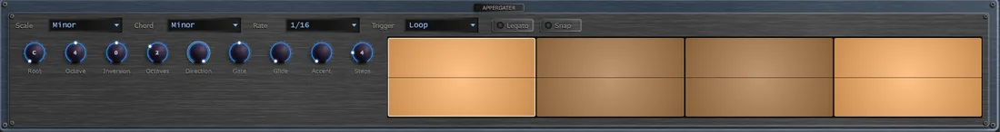
11. Modulators
Each layer has eight independent modulators (Mod A through Mod H) plus a Matrix tab - the same shared engine as mu-Clid and mu-Tant. Each layer has its own modulator bank.
Each modulator has a Mode dropdown (Stepped bar-graph or Smooth drawable curve), a Polarity switch (Uni 0 to +1, or Bi -1 to +1), and a loop length (a note-value dropdown times an integer multiplier). A playhead line shows the current loop position. In Smooth mode the curve is a smooth line through each point that never swings past its neighbours; click to add a node, drag to move, ALT-click a segment to bend it, right-click to remove. In Stepped mode, drag bars up or down. A dice button randomises the current modulator's values without changing its shape.
Add destinations with the + Target button; the assignments are shown one at a time, so step through them with the up and down arrows and the counter at the right. Each assignment has a bipolar depth (-100 to +100 percent) and a source-side curve. A modulator can move the arpeggio controls listed in the Appergater chapter, Osc 2 Semi, the oscillator positions and levels, the noise level, X-Mod Index, Depth and SSB shift, the filter's Cutoff, Resonance, Drive and Env Depth, the Amp Level and the Pitch Env depth. The Attack, Decay, Sustain and Release of the Amp, Filter and Pitch envelopes can be modulated too. When a knob is a destination, an arc around it shows the live modulated value.
The Matrix tab lists every assignment across all eight modulators in one table.
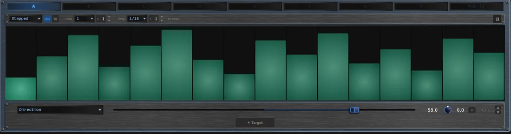
12. Mixer
Click the Mixer button in the transport bar to open the mixer overlay. Each layer occupies one channel strip (the mixer always shows eight, with unused ones dimmed); to the right are the Effect, Delay, and Reverb return channels and the Master strip. This is the same shared mixer and FX rack as mu-Clid and mu-Tant.
Each layer strip has a fader with VU metering, pan, mute and solo, sidechain ducking (source, amount, attack, release), and Effect / Delay / Reverb sends. The sidechain source dropdown includes all other layer channels plus an External option — duck any layer from any other, or from a signal fed in through the host's sidechain bus (VST3 / CLAP). The FX return strips carry intra-FX routing (Effect to Delay, Effect to Reverb, Delay to Reverb), and the master strip has two inserts, Insert 1 and Insert 2, that the summed output passes through in that order. A row of buttons at the top right (Peak, VU, K-12, K-14) chooses the metering standard. The three FX rows (Effect / Delay / Reverb) sit below the strips with algorithm selectors and inline parameters.
The faders use a rectangular cap like a small knob, with a pointer line across its middle that marks the level, running in a groove that lights up from the bottom to the cap. Every fader in the mixer looks and works the same way. In the Status Bar the mixer's Pan, Send and Sidechain knobs, the Level fader, the Mute and Solo buttons and the Effect and Delay switches all show their name and value as you use them. The sidechain Attack and Release start at 0 and can go down to 0.
Effects
- Effect — Chorus (Rate, Depth, Voices, Spread), Flanger (Rate, Depth, Feedback), Phaser (Rate, Depth, Stages, Feedback) or Echo (Time, Feedback, Spread). The Effect is a pure send, like the Reverb, so it has no Mix knob; use each layer's Effect send.
- Delay — a Time dropdown (Free, 1/32, 1/16, 1/8 or 1/4). With a note value, a Straight | Dotted | Triplet switch and a Multiple knob (1 to 8) set the time; in Free mode a Time knob sets it in milliseconds. Feedback, Spread and Dirt complete it.
- Reverb — Room, Hall, Plate or Spring, with Size, Decay (how long the tail rings, 0.1 to 10 seconds, default 2.5), Pre-delay, Diffusion, Damp, Mod and Dirt. Reverb is a pure send.
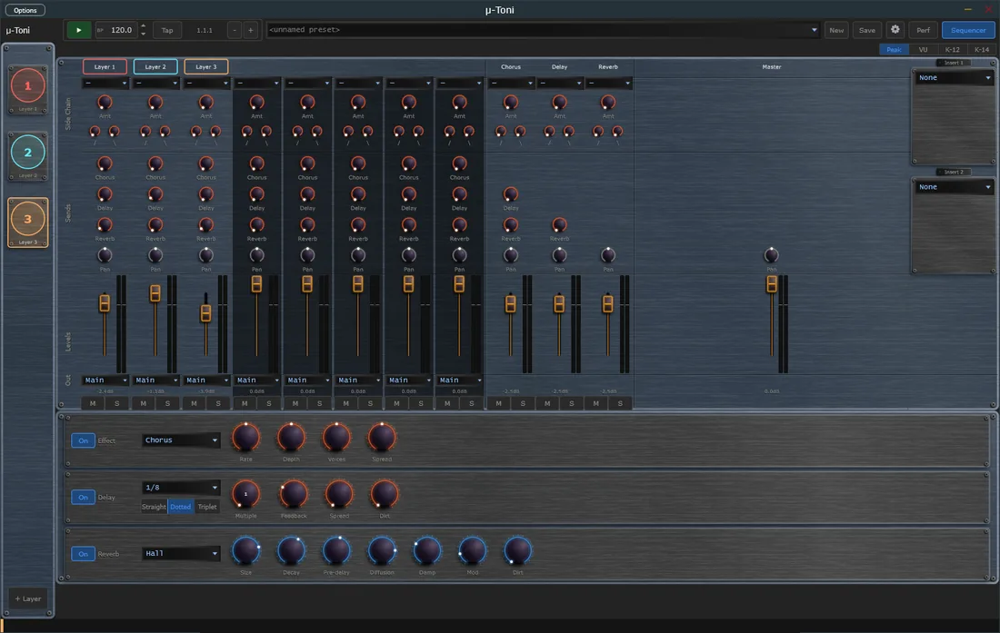
13. Presets
Full Presets (.muToni)
Full presets save the entire plugin state - all layers, modulators, mixer, and FX - to Documents\TDP\muToni\Presets. Load from the transport dropdown, which is grouped by category. Save with the Save button: enter a name, an optional description and a category, and tick Save as Default to make it the preset that loads at startup and when you press New. If saving fails (for example a full disk) mu-Toni shows an error message and never leaves a half-written preset.
Per-Layer Presets (.muArp)
Each layer can be saved and loaded independently to Documents\TDP\muToni\Arps, including its sound, its Appergater settings and its modulator assignments. Use the layer header dropdown and Save button.
When a preset, a layer preset or a saved session is loaded, any setting it does not contain is set to its default.
Clips
A clip is a stored copy of one layer's current state, ready to recall in a moment while the music plays. Every layer has up to eight clips. They sit in the Clip strip in the layer's header, between the layer-preset dropdown and the Save button: the word Clip followed by pads numbered 1 to 8. Use clips to prepare variations of a layer and switch between them in time.
Each pad is lit in the layer's own colour:
- Bright and steady — the clip that is playing.
- Dim — a clip is stored here and is available.
- Unlit, with just its number — the pad is empty.
- Pulsing — the clip is queued and will start at the next bar.
- Flashing on and off — the playing clip belongs to a muted layer.
How to use the pads:
- Click a stored pad to launch it. If playback is running, the clip waits for the next bar and the pad pulses until it starts; when playback is stopped it starts at once. Clicking another stored pad while one is waiting replaces the waiting clip.
- Click the playing pad to mute the layer. Click it again to unmute. If another clip is waiting, the click cancels the wait instead and the playing clip carries on.
- Click an empty pad to store the layer's current state there. Nothing is lost, so there is no question. The new clip becomes the playing one.
- Shift + click any pad to store the layer's current state in it. If the pad holds a different clip from the one playing, mu-Toni asks you to confirm with Replace. Storing over the playing clip, to update it after a tweak, needs no confirmation.
- Right-click a pad (or Ctrl + click) to open a small menu with Store here and Clear. Clear is available only on a stored pad and asks you to confirm. Clearing the playing clip leaves the layer playing as it is; no pad is lit afterwards.
Turning a knob changes only the layer that is playing, not the stored clip. To keep a tweak, store it again with Shift + click. Recalling a clip replaces any changes you have not stored, without asking.
Resetting a layer with Reset also clears its clips; the confirmation then reads This also clears its clips. Deleting a layer removes its clips with it. Clips are saved with full presets (.muToni) and with your DAW session or standalone state. Clips are not saved in single-layer .muArp files.
In Performance mode the Clip strip cannot be clicked, but it keeps moving so you can see what the control surface is doing.
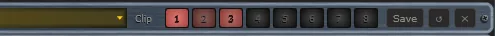
Performance Mode (Standalone)
Performance mode turns the standalone app into a locked gig view. The screen shows the preset that is playing, exactly as normal, but you cannot change anything with the mouse or keyboard. Only a connected control surface (set up through MIDI mapping) switches presets and layers. Performance mode is not available in the VST3 or CLAP plug-in.
Performance mode plays a performance: a saved list of up to eight full presets, stored as a .muPerformance file in the Performances folder inside your content folder. You make, edit and choose performances in the Performance chooser.
The Performance Chooser
Open the chooser from the Performances entry at the bottom of the preset dropdown in the Transport Bar, from the Performances button in the footer of the Preset Browser, or by clicking the Perf button (or pressing Ctrl+P) when no performance has been chosen yet. You can only open it while Performance mode is off.
- On the left is the list of your saved performances. Click one to open it. The list scrolls.
- On the right are the eight places in the performance. Each row shows its number, the preset name, which product the preset is for, and buttons. An empty row has a + Preset button. A filled row has Replace, Up, Down and Remove: Replace picks a different preset, Up and Down move the preset in the order, and Remove empties the place.
- A preset whose file can no longer be found stays in its place with a red lamp and the word missing. Replace it or remove it.
- New starts an empty performance. Load opens a .muPerformance file that you choose from disk into the list; it never saves anything. Save stores the performance under a name and an optional description. Rename changes its name. Delete removes the saved file after asking you to confirm. Saving under the name of another performance asks before it overwrites.
- Use makes this performance the one that Performance mode plays, then closes the chooser. It does not change the preset that is playing now. If the performance is new or has changes you have not saved, Use saves it first (a new one asks for a name). Use is unavailable while the performance has no presets.
- While you have unsaved changes the title shows the name followed by (unsaved). Closing the chooser, clicking New, or opening another saved performance then asks Discard unsaved changes? Choose Discard to lose the changes, or cancel to keep working.
To fill a place, click + Preset or Replace. The Preset Browser opens in pick mode: its Load button reads Pick, and the Performances button is hidden. Select a preset and click Pick (or double-click it) to put it in the place and return to the chooser with your other edits kept. Close returns to the chooser without picking. The browser lists presets for this product only.
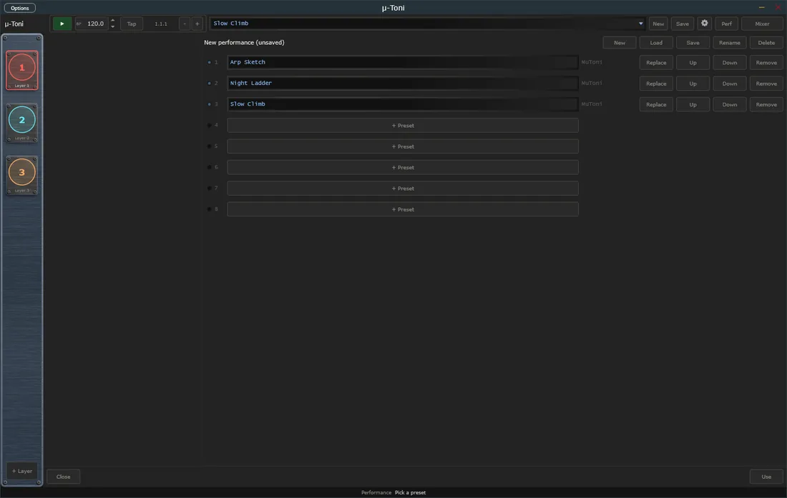
Entering
Click the Perf button (or press Ctrl+P). The preset that is playing carries on. Any open window, such as the Preset Browser, Mixer or Settings, closes without saving. If no performance has been chosen yet, the Performance chooser opens instead and the mode stays off.
What You See
- The Perf button lights in the app colour and its label changes to LIVE, and a thin lit line runs along the bottom of the Transport Bar.
- The preset dropdown, New and Save are replaced by a step indicator: a display showing the position and name of the playing preset (for example 3/8 Bassline), followed by a dimmed next preset when there is room, and a row of eight lamps. A bright lamp is the playing preset, a dim lamp is an available preset, a pulsing lamp is the preset queued to start, and an unlit lamp is an empty place. A red lamp marks a preset whose file is missing.
- When the control surface queues a switch, the playing preset stays on screen until the switch lands. The queued lamp pulses, an orange SWP badge appears, the display shows the queued preset in pulsing text, and the status bar reads Queued followed by the preset. All of this clears when the switch happens or is cancelled. The switch lands at the next bar.
- In the sidebar, the Add button is replaced by a read-only indicator such as Layer 3/5. The screen follows the control surface: selecting a layer on the surface shows that layer on screen.
- Nothing dims or changes colour; knobs, meters and the playhead keep moving, so you can see what the surface is doing.
Leaving
Press and hold the Perf button for one second. The button fills from left to right while you hold, and the status bar reads Hold to leave Performance mode. Let go early to stay in the mode. A plain click does nothing, so you cannot leave by accident. When you leave, the normal controls come back.
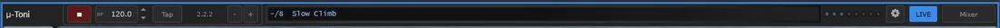
14. Settings
Click the gear icon to open the Settings overlay. Everything fits on one screen, in two columns, under two headings. Click Close to return.
General (left column):
- Audio, Master Vol — overall output level
- Display, Size — Medium or Large window. Reopen the app for the label fonts to rescale fully.
- Transport, Tempo — internal clock, 20.0 to 300.0 BPM with one decimal, also editable from the transport BPM field
- Transport, Time signature (standalone) — 2/4, 3/4, 4/4, 5/4, 6/4, 7/4, 5/8, 6/8, 7/8, 9/8 or 12/8; default 4/4. It changes how the bar.beat.sixteenth Position readout counts (a beat is a quarter note in x/4 and an eighth note in x/8). The arpeggiator steps are not affected.
- Updates, Check for updates — a tick box, ticked by default. Whether the app checks once a day for a newer version (see Update Check below).
MIDI (right column):
- MIDI In, Notes In — Omni or channel 1 to 16: which notes drive the arpeggios (see Playing with a Keyboard).
- MIDI Clock, Source (standalone) — Internal, or MIDI In to follow an external MIDI clock, with a Sync Offset to compensate for audio latency (see below).
- MIDI Program Change — the Layer Presets and Full Presets buttons open the tables that map incoming program-change messages to presets.
Tony's often asked question, Has it got an appagator, is it a powerful tool?, and a Contact Support link sit at the bottom of the page. The Settings page also has a Send Feedback link (feedback@transwarp.me) beside Contact Support.
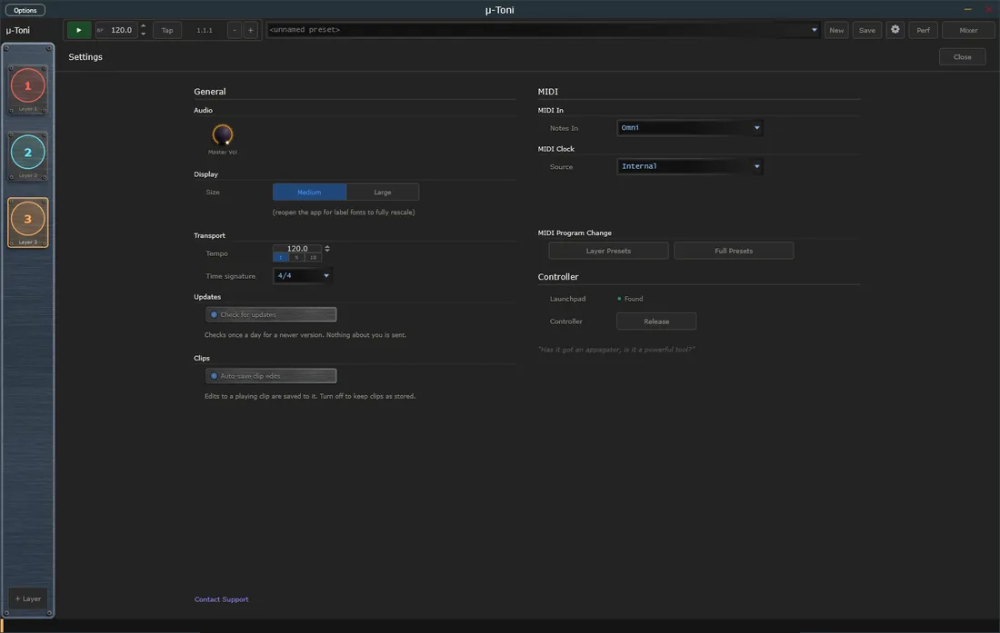
Update Check
mu-Toni can tell you when a newer version is available. Once a day it asks the transwarp.me website for the latest version number. When a newer version exists, a small Update available link appears at the right of the Status Bar, beside the Support link. Hover over it to see which version is out and which one you have.
- Click the link to open the download page in your web browser. mu-Toni never downloads or installs anything itself. The link then stays hidden for that version and comes back only when a still newer one is released.
- Right-click the link and choose Hide this notice to hide it for that version without opening the page.
- The link never appears in Performance mode.
Privacy: the check is a plain request for a public file. It sends nothing about you: no name, no identifier, no version number and no details of your computer. As with any request to a website, the site can see your internet (IP) address, as it would if you opened the page in a browser. The app compares the answer with its own version on your machine. To switch the check off, open Settings and, under General, untick the Check for updates box. With the box unticked, mu-Toni sends no request at all and shows no link. The box is ticked by default.
MIDI Clock Sync (Standalone)
When running as a standalone application, mu-Toni can follow an external MIDI clock from a drum machine, groovebox, or DAW. First choose the MIDI input that carries the clock in the standalone's MIDI settings. Selecting the input does not turn sync on by itself. To follow the clock, open Settings and, in the MIDI Clock section, set Source to MIDI In; set it back to Internal to turn sync off and ignore any incoming clock. A Messages choice appears, which decides what mu-Toni takes from the clock:
- Clock only — you start and stop mu-Toni with its own Play button, but the tempo and beat follow the clock's ticks. The BPM field is locked and shows the clock's tempo. The clock's Start and Stop messages are ignored.
- Transport only — the clock's Start, Continue, and Stop messages control playback (Start restarts from bar 1, Continue carries on from where it stopped), but mu-Toni plays at the tempo in its own BPM field and ignores the clock's ticks. The Play button is locked.
- Clock + Transport — the clock runs everything. Its Start, Continue, and Stop messages start and stop playback, and its ticks set the tempo and the beat. The first clock after Start counts as the downbeat, so your steps line up closely with the external device. The Play button and BPM field are locked.
With Clock + Transport or Transport only, mu-Toni also follows Song Position Pointer messages. If you stop the external sequencer, move its playhead, and press Continue, mu-Toni picks up from the new position instead of where it stopped.
With Clock only or Clock + Transport, a Clock lamp appears in the transport bar, between the BPM display and the Position readout. It shows the state of the incoming clock and stays steady in every state; it never blinks:
- Dim amber — Waiting for clock. Sync is on, but no clock pulses have arrived yet, or the master device is stopped and sending nothing.
- Green — Locked. mu-Toni is following the clock. Hover over the lamp and the status bar shows the tempo, for example "Locked at 120 BPM".
- Red — Lost. The clock pulses stopped arriving for about a quarter of a second while the master was playing, for example because a cable came loose or the master device was switched off. mu-Toni stops the transport, and the status bar shows "MIDI Clock: Lost, transport stopped" once, without you having to hover. When the pulses come back, mu-Toni carries on by itself.
The lamp is hidden with Transport only, because the clock's ticks are not used, and whenever Source is Internal. The BPM display works as before: it is locked and shows the clock's tempo while the clock sets the tempo.
Sync Offset — with Source set to MIDI In, a Sync Offset field appears in the MIDI Clock section of Settings. It runs from −50 to +250 ms (the label reads simply Sync offset) and defaults to 0. The value is shown with a sign, for example +25. The arrows step 1 ms; Shift+click steps 10 ms. A positive value makes mu-Toni play earlier than the clock says. Enter your audio output latency here (about 20 to 40 ms on Windows WASAPI) so the sound lands on the beat of a hardware master. mu-Toni remembers the setting between sessions.
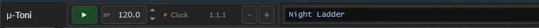
MIDI Program Change to Preset
mu-Toni can load presets from incoming MIDI program-change messages. On channels 1 to 8 a program change loads the matching .muArp into that layer; on channel 9 it loads a full .muToni preset. While playing, the change is staged and applied seamlessly (hot-swap). Configure the mappings with the Layer Presets and Full Presets buttons in Settings, under MIDI Program Change.
15. Connecting to mu-link
mu-link is a companion application from Transwarp Development Project: a local audio hub and master clock for the mu family. When mu-link is running, the mu-Toni standalone application connects to it automatically — mu-Toni's audio is summed into mu-link's mix and its transport locks to mu-link's master clock. The plug-in versions are unaffected; only the standalone connects, because in a DAW the host already owns the clock and audio device.
How to Connect
- Launch mu-link, then launch mu-Toni standalone — in either order. Within about a second the mu-Toni title bar shows 'mu-link connected'.
- mu-Toni's audio now plays through mu-link's output device, summed with any other connected mu apps, and appears as a channel in mu-link's client strip with its own level, pan, mute, and solo.
- mu-Toni's arpeggiator and modulators follow mu-link's clock: mu-link is the tempo master, and its Play/Stop and tempo drive mu-Toni. Use mu-link's transport (not mu-Toni's) while connected.
- Quit mu-link and mu-Toni instantly reverts to its own audio device and internal transport — no restart needed.
- MIDI in — the controllers you enabled in the standalone's MIDI settings still reach mu-Toni while it is connected, so program changes still load presets. For now they arrive roughly 85 milliseconds late, which is under a tenth of a second. Incoming MIDI clock is not followed while connected, because mu-link sets the tempo; to sync to external gear, connect its clock to mu-link instead.
This lets you run mu-Toni, mu-Clid, mu-Tant and other mu standalones together, perfectly in sync and mixed to a single output — and lets mu-link slave the whole rig to an external MIDI clock. See the mu-link User Manual for the full picture.
16. Tips and Workflow
- Starting out: press Play. The default layer arpeggiates a minor triad over two octaves in sixteenth notes.
- Bassline: set Octave to 2, Octaves to 1, Chord to Power (5th), Gate to 100 percent, Legato on and Glide to 60 ms for a sliding bass.
- Chord progression: add a stepped modulator to Chord (and another to Root) and draw a few steps; each step re-voices the arpeggio, one chord per step.
- Pulse and accent: set Steps to 4, set the first and third cells to Accented and raise Accent to 60 percent for a driving accent pattern.
- Layered arp: add a second layer, set its Octave higher and its Rate to 1/8, and the two layers interlock.
- Play it live: set Trigger to MIDI and play single notes on a keyboard; the arpeggio starts on each key press and follows the note you hold.
- Evolving patterns: put a slow smooth modulator on Direction or on the filter Cutoff.
17. Technical Specifications
- Formats: VST3, CLAP, Standalone (Windows)
- Layers: 1 to 8 (default 1), each a monophonic arpeggiator with two wavetable oscillators plus noise
- Scales: 12. Chords: about 35. Octaves: 1 to 4. Rates: 1/4 to 1/32, straight, dotted and triplet
- Envelopes: amplitude, filter and pitch ADSR, 1 ms to 4 s
- Filter types: LP / HP at 6, 12, 24 dB per octave; BP 12 / 24; Notch 12 / 24; AP 12; Comb + / Comb -; Peak; Lo Shelf; Hi Shelf
- Insert effects: 14 plus None per layer, and two on the master
- Modulators per layer: 8 (smooth LFO or stepped), plus a matrix view
- Full preset format: .muToni (XML). Per-layer preset format: .muArp (XML)
- Third-party libraries: JUCE, Signalsmith Reverb (MIT), clap-juce-extensions (MIT)
Hosts That Do Not Run an Event Loop
mu plugins need the host to run its normal event loop, as every ordinary DAW does. A few headless or offline-only renderers do not. In those, changes made by MIDI or a controller, MIDI program changes, and preset loads made while playing may not take effect until the host runs its event loop. If you hit this, load presets while the transport is stopped, or render with a host that runs its event loop.
Prefer a file? Download the manual as a PDF. Back to mu-Toni · release notes · all guides.